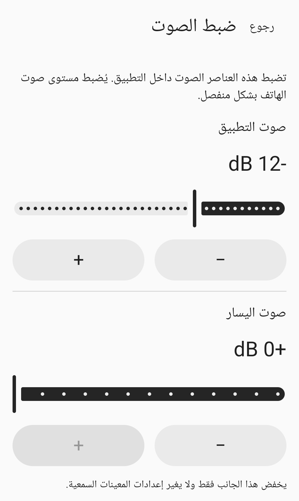

ضبط يدوي للأصوات المحيطة
الأصوات حولك،اضبطها بنفسك.
الصوت من ميكروفون هاتفك،إلى سماعات الرأس التي تختارها.اضبط المستوى واليمين واليسار ونبرة الصوت بنفسك.
اطّلع على طريقة الاستخداملم يُطرح التطبيق للجمهور بعد.

طريقة الاستخدام
وصّل، واضبط، ثم ابدأ.
وصّل
وصّل سماعات الرأس بهذا الهاتف، ثم اختر مخرج الصوت في التطبيق. الوضع الافتراضي هو الاتصال السلكي أو USB. لاستخدام Bluetooth، فعّل الوضع التجريبي واختر بنفسك مخرج الصوت المتصل.
اضبط
اضبط مستوى صوت التطبيق والقناتين اليمنى واليسرى ونبرة الصوت. مستوى صوت الوسائط في الهاتف إعداد منفصل. ارتدِ سماعات الرأس واستعد بمستوى صوت منخفض.
ابدأ
اسمح بالوصول إلى الميكروفون، واقرأ تنبيه الجلسة، ثم اضغط زر الموافقة والبدء. منح الإذن وحده لا يشغّل الميكروفون. يمكنك الإيقاف من التطبيق أو إشعار الجلسة.
ضبط الصوت
اختر التعديلات بنفسك.
إعدادات التطبيق ومستوى صوت الوسائط في الهاتف منفصلان عن بعضهما.
مستوى صوت التطبيق
اضبط داخل التطبيق مستوى الصوت المُرسل إلى سماعات الرأس المختارة. تحقّق أيضاً من مستوى صوت الوسائط في الهاتف.
اليسار واليمين
اخفض مستوى كل قناة على حدة. لا تغيّر هذه الأدوات الإعدادات الخاصة بسماعات الرأس أو المعينات السمعية.
نبرة الصوت
اضبط نبرة الصوت يدوياً. لا يجري التطبيق تعويضاً تلقائياً بناءً على اختبار للسمع.
الصورة أعلاه جزء مقتطع من شاشة ضبط الصوت الفعلية. أدوات ضبط القناة اليمنى ونبرة الصوت خارج الجزء الظاهر.
الأسئلة الشائعة
قبل أن تبدأ
هل يمكنني استخدام سماعات رأس Bluetooth؟
دعم Bluetooth تجريبي. وصّل السماعات بهذا الهاتف، وفعّل الوضع التجريبي، ثم اختر مخرج الصوت بنفسك. يعتمد التأخير وجودة الصوت على الهاتف والسماعات.
هل تُستأنف الجلسة عند إعادة توصيل السماعات؟
لا. تنتهي الجلسة عند فقدان مسار الصوت أو أولوية استخدام الصوت أو إذن الميكروفون. إعادة توصيل السماعات أو فتح التطبيق مجدداً لا تبدأ الجلسة. ابدأها بنفسك عندما تكون مستعداً.
ماذا أفعل إذا لم تظهر السماعات في القائمة؟
تحقّق من اتصال صوت الوسائط عبر Bluetooth في هذا الهاتف، ثم حدّث قائمة مخارج الصوت. تتوفر إرشادات إضافية في صفحة الدعم.
كيف أحذف التسجيلات أو بيانات التطبيق؟
لا ينشئ التطبيق ملفات تسجيل للميكروفون. راجع دليل البيانات المحلية لحذف إعدادات الصوت أو سجل طلبات الأذونات أو السجل الاختياري لآخر اختبار.
يرجى القراءة قبل الاستخدام.
للبالغين من عمر 18 عاماً فما فوق ممن يتمتعون بسمع طبيعي، يُعد HearAssist أداة لضبط الأصوات المحيطة يدوياً. وهو غير مخصص لتعويض فقدان السمع أو استبدال المعينات السمعية أو اختبار السمع أو تشخيص الحالات الطبية أو علاجها.
لم يتم التحقق من وضوح الكلام أو زمن التأخير الفعلي أو السلامة الصوتية. لا نضمن إزالة الضوضاء بالكامل أو انعدام التأخير.
لم يُطرح التطبيق للجمهور في متاجر التطبيقات بعد. يوفّر هذا الموقع معلومات عن المنتج والدعم.